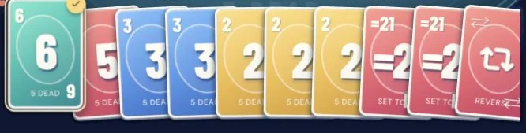
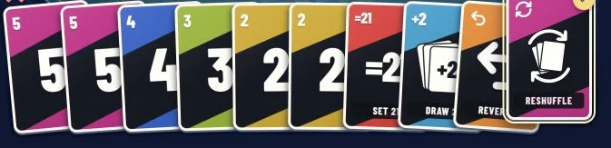

Before and after, the same evening
Before · 17:51

Every card had the same ring and a pastel fill, so number and action cards shared one look.
After · 18:08

Colours follow the cues of the printed game. Action cards get their own label strip and drop the lower corner number, so the two never collide.
Screens from the same phone layout, captured 17 minutes apart. The cards are drawn in code, not as images.